FuelEU Maritime
Compliance balance, GHG intensity, penalty and EU scope share, voyage by voyage.
Veson IMOS · DNV
Shuddha Now brings noon reports, voyage legs and off-hire into one calm view of your fleet’s emissions, EU ETS exposure, FuelEU Maritime balance and CII. Ask K.R.1.S, the maritime emissions assistant, in plain words, and get the answer straight from your own records.
You surrender EUAs for a rising share of verified emissions — one EUA per tonne of CO₂e, with methane and N₂O included from 2026.
Shuddha Now syncs Veson IMOS, Geoform and DNV figures into your own database, so every screen — and every answer — reads from the same trusted copy.
Compliance balance, GHG intensity, penalty and EU scope share, voyage by voyage.
Veson IMOS · DNVCO₂ from noon reports and voyage legs, side by side — the basis of your EU ETS surrender and EUA exposure.
Geoform · VesonFuel, shaft power, speed and RPM, main engine and auxiliaries — the levers behind CII and EEXI.
Noon reportsOff-hire hours and days, booked to when they started, with gaps flagged.
Veson IMOSK.R.1.S (say it “Kris”) is built for maritime emissions and marine technology — EU ETS, FuelEU Maritime, CII, EEXI and your fleet’s fuel and carbon intensity. It picks the fastest exact route to each answer, and shows it visually when a picture reads faster.
Deadlines, unit conversions (knots, nautical miles, tonnes, kWh) and number comparisons are worked out exactly on the server — typos and all.
Fuel, CO₂, GHG intensity and FuelEU balance questions become one parameterised query against your synced data, scoped to your department, with the source beside every figure.
Regulation questions — EU ETS, FuelEU Maritime, CII, EEXI — and everything else are written by the conversation model and streamed as they are written, behind a guard that stops any invented vessel figure.
K.R.1.S is live in the corner of this page, talking to the real backend.
Read from the health check each time the page loads.
Paste this before </body>. The widget works out its own API address from where the script was loaded, so nothing else on your page needs configuring.
KRIS_ALLOW_ORIGIN to https://perform.geoserves.com so the browser may call K.R.1.S from your domain.verifyToken() in src/httpHandler.js with your real session check and remove KRIS_DEV_SESSION. getToken should return the user’s real session token.KRIS.setContext({ vesselId, vesselName }) when the page loads.On a vessel’s page your app tells K.R.1.S which vessel is on screen, so “fuel consumption last month” needs no vessel name. Try it here: